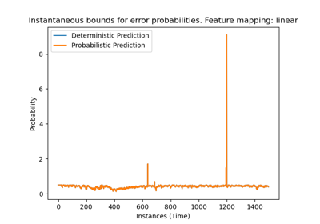
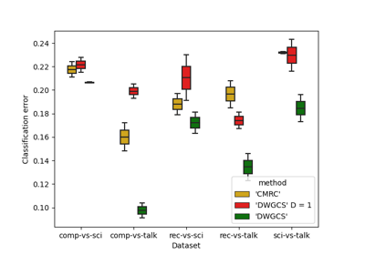
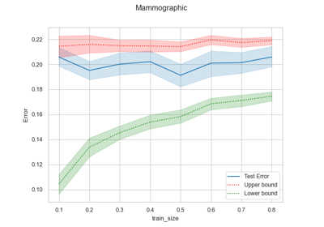
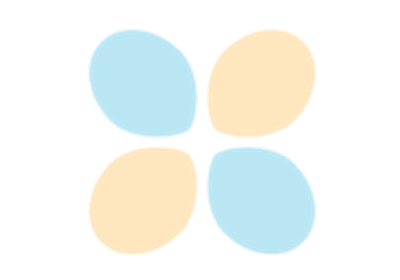

Gallery of examples#
Basic Examples#
This gallery consists of introductory examples and examples demonstrating specific features of MRCpy library.

Example: Use of CMRC with different settings
Example: Use of CMRC with different settings

Example: Use of AMRC (Adaptative MRC) for Online Learning
Example: Use of AMRC (Adaptative MRC) for Online Learning

Example: Use of DWGCS (Double-Weighting General Covariate Shift) for Covariate Shift Adaptation
Example: Use of DWGCS (Double-Weighting General Covariate Shift) for Covariate Shift Adaptation
Further applications#
This gallery contains examples that illustrate further applications of MRCpy library and its features.


Hyperparameter Tuning: Upper Bound vs Cross-Validation
Hyperparameter Tuning: Upper Bound vs Cross-Validation

Example: Use of Upper and Lower bound as error estimation
Example: Use of Upper and Lower bound as error estimation

Example: Predicting COVID-19 patients outcome using MRCs
Example: Predicting COVID-19 patients outcome using MRCs